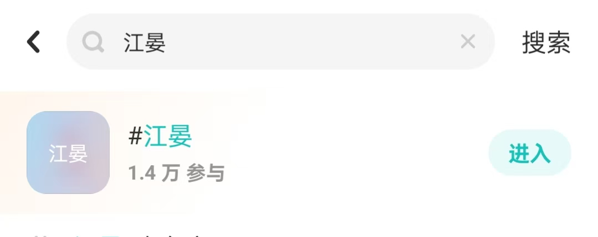

养父还是养夫：江晏魅力探索
最近一个名叫江晏的游戏角色频频出圈，该角色出自网易于去年年底公测的联机武侠大世界探索游戏：燕云十六声。
然而江晏在该游戏中的出场总时长甚至没有十分钟，却有着奇高的热度。

许多人都说江晏不仅仅是一个游戏的官方角色，还是由同人二创一同丰满起来的人物。我在b站搜索江晏，无论是最多播放、最多弹幕、最多收藏还是综合排序，出现的都是关于江晏的二创作品。
为了探究江晏的魅力所在，我爬取了b站江晏话题下弹幕以及收藏数最多的一个视频，来进行了一些浅显的相关分析。